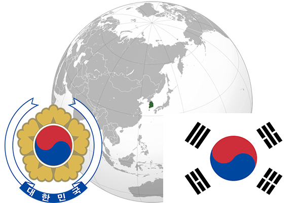

To`liq nomi: Korea Respublikasi
Region: Sharqiy Osiyo
Qonunchilik shakli: Respublika
Mustaqillik kuni: 15-avgust 1945 – yil (Yapon Imperiyasidan)
Poytaxt: Seul
Maydoni: 99 720 km² (dunyoda 109 -o`rinda )
Chegaradosh davlatlari: Shimoliy Korea
Aholisi: 51 732 586 (dunyoda 28 - o`rinda, 2015 -yil roʻyxat)
Aholi zichligi: 515,2 /km²
Aholining o`rtacha yoshi: 79,1 yil ( 80,1 ayollar, 78,1 erkaklar)
Rasmiy tili: Kareys tili
Dini: 51,2% - Buddistlar, 34,4%-protestant, 10,6%-katolik. Aholining 40%i ateist
Pul birligi: Janubiy karea voni
Telefon prefiksi: +82
Internet domen: .kr
Xalqaro tashkilotlarga a`zoligi: BMT (1991 – yildan), Osiyo-Tinchokeani Iqtisodiy hamkorligi
Dengiz va okeanlarga chiqishi: Sariq dengiz
YIM: Butun: $ 1,457 trln, Jon boshiga $ 27 633
Yirik shaharlari: Seul, Pusan, Inchxon, Kvandju, Tegu, Tedjon